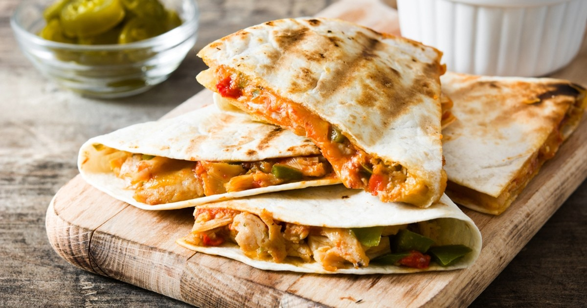

Quesadilla recipe

In this article you will learn to make another delicious mexican dish
Quesadilla is simple to make, fast, is rich in protein and more importantly verytasty
It may look like it is difficult, but after this article you will be an expert
Ingredients
- Chicken
- Black beans
- Chopped onions
- Peppers
- Tomatoes
- Corn
- and pepper jack cheese
Steps
- Heat a skillet over medium heat
- Pour in a little oil
- Add the tortilla
- Fill it halfway across with your ingredients, then fold into a half-moon shape
- Cook the torilla on both sides until golden-brown and heated through